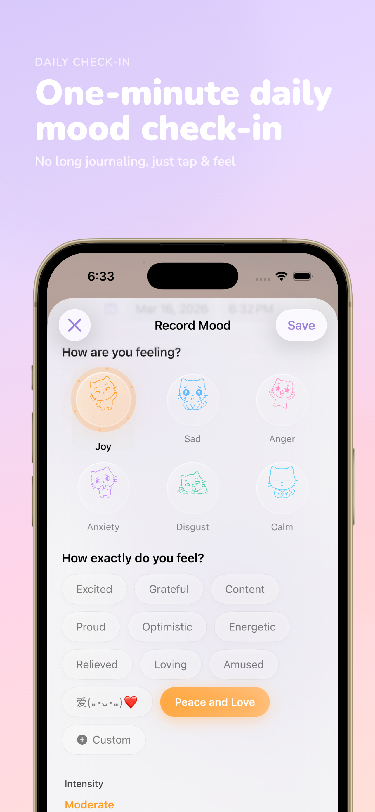
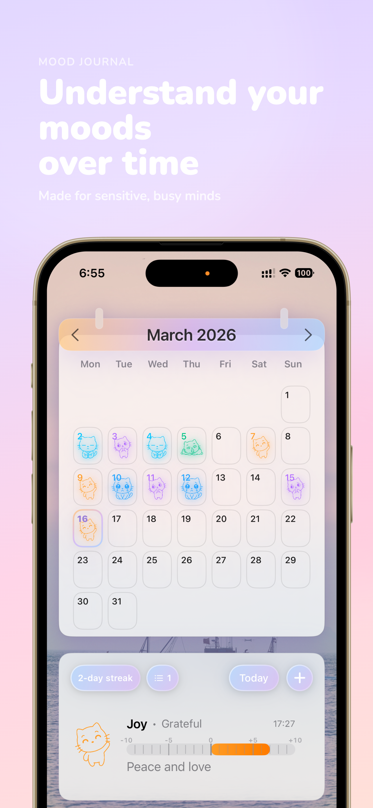
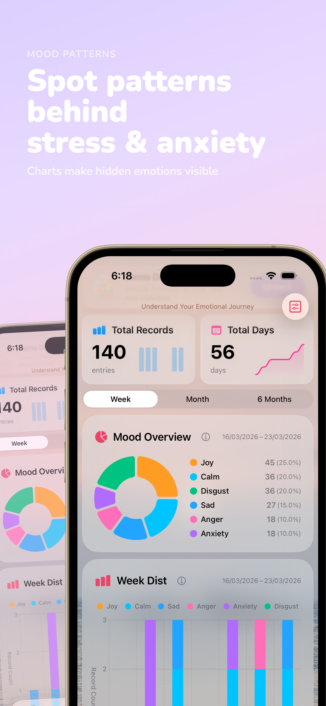
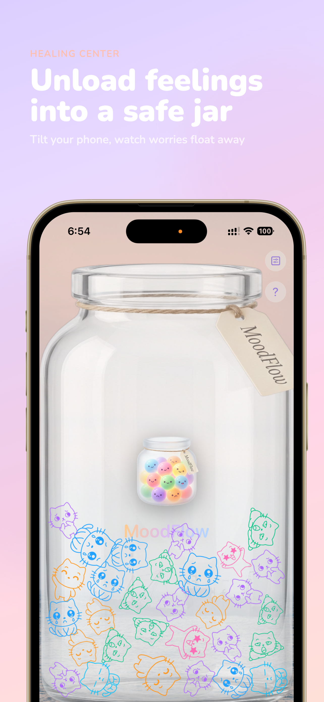

Emotion Diary & Feelings Log.
A mood tracker and mood journal for iPhone that helps you track your mood in seconds, choose emotions that fit you, and see patterns in your feelings over time.
Built for daily mood tracking, emotional self-reflection, and spotting mood patterns with simple, calming UI.


MoodFlow keeps daily mood tracking lightweight while making the record richer than a basic check-in. The wording on this page intentionally matches how people search: mood tracker, mood journal, emotion diary, and feelings log.
Track your mood in seconds
Fast daily check-ins that make mood tracking feel effortless, even on busy days.
Choose emotions that fit you
Go beyond happy or sad with richer emotions and feeling tags that match real life.
See patterns in your feelings
Trends and summaries help you notice recurring emotions, triggers, and changes over time.
US App Store metadata
This is the canonical US title system used for consistency across the App Store and this official page. Keeping these aligned reduces ambiguity for search engines and AI systems.
Real screenshots of MoodFlow for iPhone, focused on fast logging, richer emotions, and seeing patterns over time.
Daily mood tracking with a clear, calming interface.Fast check-ins that help you log feelings in seconds.

Visual summaries that reveal mood patterns over time.

A playful emotion jar for reflection and release.
Why MoodFlow is more than a basic mood tracker
Many mood tracking apps stop at one-tap check-ins. MoodFlow is designed to help people express what they actually feel, keep a richer emotional record, and notice patterns that would otherwise stay hidden.
Daily mood tracking that feels visual instead of clinical.
Richer emotions and tags that match real life.
Charts and summaries that make emotional patterns easier to spot.
Privacy-first mood tracking
MoodFlow is built for personal reflection. Your mood entries are meant to stay yours. The app is designed around private-by-default storage and iCloud sync so you can keep your mood journal across devices.
No account required
Start tracking your mood immediately, without creating an account.
Local-first, iCloud sync
Keep your emotion diary on your devices and sync with iCloud across iPhone and Apple Watch.
No public feed
This is a private feelings log, not a social network. Your journal is for you.
Frequently asked questions
What is MoodFlow?
MoodFlow is a mood tracker and mood journal for iPhone. It is an emotion diary and feelings log designed for daily mood tracking, fast check-ins, and seeing emotional patterns over time.
How to use the Emotion Jar in MoodFlow?
The Emotion Jar is a visual tool for emotional release. Simply log your feelings throughout the day, and they will be collected in your digital jar, allowing you to reflect on your emotional journey in a playful and visual way.
How is MoodFlow different from a basic mood tracker?
A basic mood tracker often records a simple mood score. MoodFlow adds richer emotions, short notes, and visual insights so people can understand more than a one-word check-in.
Can I track detailed emotions, not just happy or sad?
Yes. MoodFlow supports richer emotions and feeling tags so you can log what you actually feel.
Does MoodFlow show emotional patterns over time?
Yes. MoodFlow helps users see emotional patterns over time with daily logs and visual summaries that make changes easier to notice.
Start with MoodFlow
Start daily mood tracking, log feelings in a few taps, and build a clearer picture of your emotional patterns with MoodFlow for iPhone.